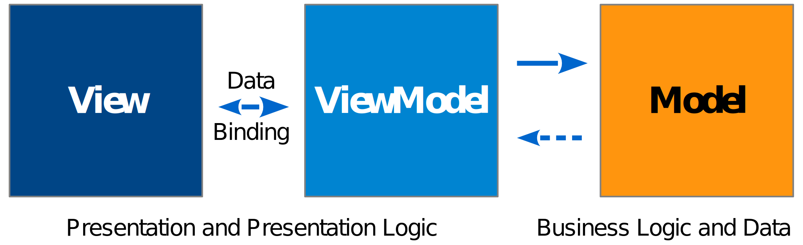

Coffee PotはJavaScript用MVVMフレームワークです。
以下の特徴を持ちます。
注意: まだ未実装部分があります
$ git clone git://github.com/keisuken/coffeepot.git
MVVMはView, ViewModel, Modelの3つにわかれ、それぞれ見た目、見た目に対する操作、ビジネスロジックを担当します。

| 名前 | 詳細 |
|---|---|
| View | プレゼンテーション(HTML(DOM)) |
| ViewModel | プレゼンテーションロジック(イベント処理とデータ) |
| Model | ビジネスロジックとデータ |
Viewは見た目を担当し、HTMLとして記述されます。
DOM(HTMLのタグ)に一意のid属性を付けることによってViewModelにバインドできるようになり操作できます。
<!-- Form -->
<div>
<input id="name" type="text">
<input id="mail" type="text">
<select id="sex">
<option value="1">Male</option>
<option value="2">Female</option>
<option value="0">Unkown</option>
</select>
<input id="age" type="text">
</div>
<!-- Preview table -->
<div>
<table>
<thead>
<tr>
<td>Name</td>
<td>Mail</td>
<td>Sex</td>
<td>Age</td>
</tr>
</thead>
<tbody>
<tr>
<td id="preview_name"></td>
<td id="preview_mail"></td>
<td id="preview_sex"></td>
<td id="preview_age"></td>
</tr>
</tbody>
</table>
</div>
ViewModelはViewのプレゼンテーションロジックを担当し、入力値などのViewの値をバインドします。
val属性を指定した場合は自動的にViewModelのvaluesに保持されます。
Viewにはバリデーションやフォーマットなどのアクションを設定でき、必要に応じてViewの値をフォーマットして再表示したり、型変換を行ってViewModelのvaluesに格納されます。
bindings: {
// <input id="value0" type="text" values="">
value0: 'val',
// <img id="image0" src="">
image0$src: 'attr',
// <span id="message"></span>
message: 'text',
// <div id="urlList"></div>
urlList: 'html',
},
events: {
value0: {
change: function(event) {
this.updateResult();
}
},
submit: {
click: function(event) {
...
this.Model.submit(value0, value1, ...);
}
}
}
Modelは見た目に関係ないビジネスロジックを担当し、ViewModelから呼び出され、サーバを呼び出したり、場合によってはViewModelを呼び出したりしながら、アプリケーションの目的を果たします。
$(document).ready(function() {
// ViewModel
var ViewModel = {
// Initialize
init: function() {
// 初期化コード
},
// バインド
bindings: [
url: 'val',
title: 'val',
tags: 'val'
],
events: {
url: {
'change': function(event) {
this.Model.getTitle(this.$.url);
}
}),
submit: {
click: function(event) {
var _ = this.values;
this.Model.submit(_.url, _.title, _.tags);
}
}
},
// Update title.
updateTitle: function(title) {
this.set('title', title);
}
};
// Model
var Model = {
// Get web page title.
getTitle: function(url) {
...
},
// Submit form.
submit: function(url, title, tags) {
...
}
};
CoffeePot.set(VideModel, Model);
});
...
<input id="url" type="text" value="">
<input id="title" type="text" value="">
<input id="tags" type="text" value="">
<input id="submit" type="submit" value="Submit">
...
| 名称 | 内容 |
|---|---|
| init | 初期化する |
| bind | データおよびイベントを設定する |
| unbind | データおよびイベントを解除する |
| 名称 | 内容 |
|---|---|
| init | 初期化する |
| 名称 | 内容 |
|---|---|
| bindings | データバインド情報 |
| events | イベント情報 |
| values | データプロパティ |
| 名称 | 内容 |
|---|---|
| blur | フォーカスが外れた |
| focus | フォーカスされた |
| change | 入力内容が変更された |
| click | クリックされた |
| dblClick | ダブルクリックされた |
| keuUp | キーを離した |
| keyDown | キーを押した |
| keyPress | キーを打った |
| mouseUp | マウスボタンを押した |
| mouseDown | マウスボタンを離した |
| mouseMove | マウスが移動した |
| mouseOut | 領域からマウスが外れた |
| mouseOver | 領域にマウスが入った |
| mouseMove | マウスを動かした |
ViewModelのデータバインドの定義です。
1.DOM種類 2.型(Converter) 3.整形(Reducer) 4.フォーマッタ(Formatter)
| 属性 | 詳細 |
|---|---|
| val | FORMの入力 |
| attr | 属性 |
| class | クラス |
| text | テキスト |
| html | HTML |
| 型 | 内容 |
|---|---|
| text | テキスト |
| int | 整数 |
| float | 浮動小数点 |
| boolean | 論理 |
| date | 日付(未実装) |
| 型 | 内容 |
|---|---|
| trim | 前後のスペース削除 |
| default | 空の場合のデフォルト値 |
| max | 最大文字数 |
| replace | 正規表現文字置換 |
| 型 | 内容 |
|---|---|
| comma3 | 3カンマ区切り |
| comma4 | 4カンマ区切り |
| date | 日付 |
| format | sprintf相当 |
binds: {
name: 'val:int:trim,max(100):comma3',
amount: 'val:int:trim:comma3',
...
}